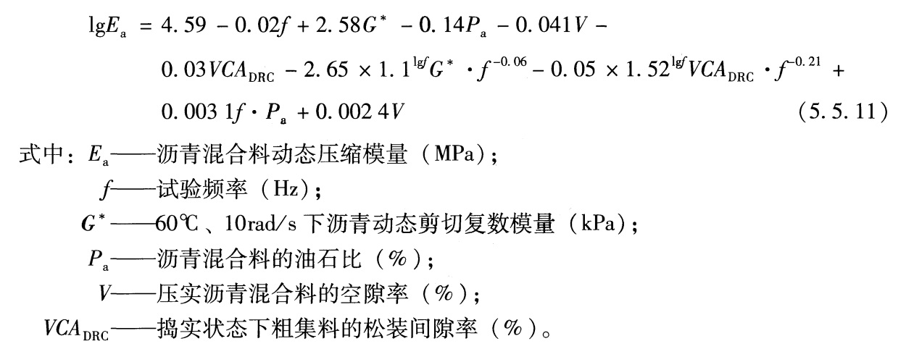

5.1 一般规定
5.1.1路面材料应根据公路等级、交通荷载等级、气候条件、各结构层功能要求和当地材料特性等，在技术经济论证基础上进行设计并确定材料设计参数。
5.1.2各结构层的原材料性质要求和混合料组成与性质要求，应符合现行《公路沥青路面施工技术规范》(JTG F40)和《公路路面基层施工技术细则》(JTG/T F20)的有关规定，并应结合工程特点和当地经验确定。
5.1.3路面结构层材料设计参数的确定可分为下列三个水平:
- 水平一， 通过室内试验实测确定。
- 水平二，利用已有经验关系式确定。
- 水平三，参照典型数值确定。
5.1.4高速公路和一级公路的施工图设计阶段宜采用水平一，其他设计阶段可采用水平二或水平三;二级及二级以下公路可采用水平二或水平三。
5.3 粒料类材料
5.3.1基层、底基层级配碎石的CBR 值应符合表5.3.1的有关规定。

5.3.2级配砾石或天然砂砾用于基层时， CBR 值不应小于80。级配砾石或天然砂砾用于底基层时，对极重、特重和重交通荷载等级，CBR 值不应小于80;对中等交通荷载等级，CBR值不应小于60;对轻交通荷载等级，CBR值不应小于40。
5.3.3高速公路和一级公路基层粒料公称最大粒径不宜大于26.5mm;底基层采用级配碎石或级配砂砾时，公称最大粒径不宜大于31. 5mm;底基层采用天然砂砾时，公称最大粒径不宜大于53. 0mm。二级及二级以下公路的基层、底基层粒料公称最大粒径不宜大于53.0mm。
5.3.4 填隙碎石公称最大粒径宜为层厚的1/2 ~2/3。 填隙碎石用于基层时，骨料公称最大粒径不应超过53. 0mm;用于底基层时，骨料公称最大粒径不应超过63. 0mm。
5.3.5 防冻层所用砂砾、碎石材料的最大粒径不应超过53. 0mm。
5.3.6 级配碎石和级配砂砾中通过0. 075mm筛孔的颗粒含量不宜大于5%，不满足要求时，可用天然砂替代部分细集料。
5.3.7 粒料层的回弹模量在结构验算时应采用粒料回弹模量乘以湿度调整系数后得到，湿度调整系数可在1.6~2.0范围内选取。粒料回弹模量应取用最佳含水率和与压实度要求相应的干密度条件下的试验值。压实度要求应符合现行《公路路面基层施工技术细则》(JTG/T F20)的有关规定。
5.3.8 最佳含水率和与压实度要求相应的干密度条件下的粒料回弹模量应按本规范第5.1.4条规定，依据相应的水平确定:
- 水平一，按本规范附录D采用重复加载三轴压缩试验测定，取回弹模量试验结果的均值。
- 水平三，按粒料类型和层位参照表5.3.8确定粒料回弹模量取值。

5.4 无机结合料稳定类材料
5.4.1无机结合料稳定类材料用于高速公路、一级公路基层时，公称最大粒径不宜大于31. 5mm;用于高速公路和一-级公路底基层或二二级及二级以下公路基层时，公称最大粒径不宜大于37.5mm;用于二级及二级以下公路底基层时，公称最大粒径不宜大于53.0mm。
5.4.2水泥稳定 类材料水泥剂量宜为3.0% ~6. 0%。
5.4.3贫混凝土集料公称最大粒径不宜大于31. 5mm,水泥用量不得少于170kg/m3 ，28d弯拉强度标准值宜控制在2.0 ~ 2.5MPa范围内。
5.4.4贫混凝土集料公称最大粒径不宜大于31. 5mm,水泥用量不得少于170kg/m3 ，28d弯拉强度标准值宜控制在2.0 ~ 2.5MPa范围内。

5.4.5无机结合料稳定类材料弯拉强度和弹性模量应按本规范第5.1.4条规定，依据相应的水平确定:
- 水平一，按本规范附录E,采用中间段法单轴压缩试验测定。弯拉强度和弹性模量的测定应符合现行《公路工程无机结合料稳定材料试验规程》(JTG E51)中T0851的有关规定。测试时水泥稳定类、水泥粉煤灰稳定类材料试件的龄期应为90d,石灰稳定类、石灰粉煤灰稳定类材料试件的龄期应为180d。弯拉强度和弹性模量应取用测试数据的平均值。

- 水平三，参照表5.4.5确定弯拉强度和弹性模量。
5.4.6结构验算时， 无机结合料稳定类材料弹性模量应乘以结构层模量调整系数0.5。
5.4.7冻土地区 高速公路和一级公路的石灰粉煤灰稳定类基层，应按现行《公路工程无机结合料稳定材料试验规程》(JTG E51)中T 0858的有关规定进行材料抗冻性能检验，其残留抗压强度比应符合表5.4.7的要求。

5.5 沥青结合科类材料
5.5.1沥青结合料应采用道路石油沥青或其加工产品，沥青类型应根据公路等级、气候条件、交通荷载等级、结构层位和施工条件等确定。
5.5.2极重、特重和重交通荷载等级公路、气候条件严酷地区公路，以及连续长陡纵坡路段，中面层和表面层宜采取优化混合料级配、选用改性沥青或添加外掺剂等措施。
5.5.3开级配沥青混合料表面层宜采用高黏沥青或橡胶沥青，并采用适量消石灰或水泥替代矿粉。
5.5.4表面层沥青混合料公称最大粒径不宜大于16.0mm，中面层和下面层沥青混合料公称最大粒径不宜小于16. 0mm，基层沥青碎石公称最大粒径不宜小于26. 5mm。
5.5.5季节性东土地区高速公路和一级公路表面层沥青低温性能宜满足下列指标要求:
- 分析连续10年年最低气温平均值，作为路面低温设计温度。路面低温设计温度提高10C的试验条件下，沥青弯曲梁流变试验蠕变劲度s,不宜大于300MPa,且蠕变曲线斜率m不宜大于0.30。
- 当蠕变劲度S,在300∼600MPa范围内，且蠕变曲线斜率m大于0.30时，增加沥青直接拉伸试验，其断裂应变不宜小于1%。
- 以上都不满足时，采用弯曲梁流变试验和直接拉伸试验确定沥青临界开裂温度,临界开裂温度不宜高于路面低温设计温度。
5.5.6二级及二级以上公路公称最大粒径不大于19. 0mm的沥青混合料，宜在温度为-10C、加载速率为50mm/min条件下进行小梁弯曲试验。沥青混合料的破坏应变宜符合表5.5.6的规定。

5.5.7高速公路和一级公路沥青混合料应在规定的试验条件下进行车辙试验，并应符合表5.5.7的要求。二级公路可可参照执行。

5.5.8宜采用本规范附录 F规定的单轴贯人试验方法测定沥青混合料贯人强度。无机结合料稳定类基层沥青路面、底基层采用无机结合料稳定类材料的沥青结合料类基层沥青路面和水泥混凝土基层沥青路面的沥青混合料贯人强度，宜满足式(5.5.8-1)的要求。
5.5.9粒料类基层沥青路面和底基层采用粒料的沥青结合料类基层沥青路面，沥青混合料贯入强度宜满足式(5.5.9-1)的要求。
5.5.10沥青混合料应测试浸水马歇尔试验残留稳定度和冻融劈裂试验残留强度比检验水稳定性。两项指标应符合表5. 5.10的规定。水稳定性不满足要求时，可采取掺人消石灰、水泥或抗剥落剂，或更换集料等措施。
5.5.11 沥青混合料动态压缩模量应按本规范第5.1.4条规定，依据相应的水平确定:
- 水平一，沥青混合料动态压缩模量的测定应符合现行《公路工程沥青及沥青混合料试验规程》(JTG E20) T 0738的有关规定，取平均值，试验温度选用20C，面层沥青混合料加载频率采用10Hz，基层沥青混合料加载频率采用5Hz。
- 水平二，采用式(5.5.11) 计算确定沥青混合料动态压缩模量，适用于采用道路石油沥青和常规级配的沥青混合料。

- 水平三，参照表5.5.11确定沥青混合料动态压缩模量。